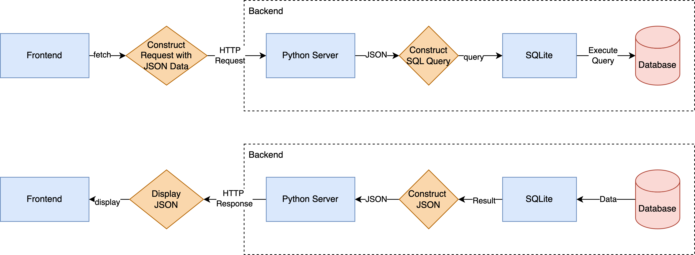
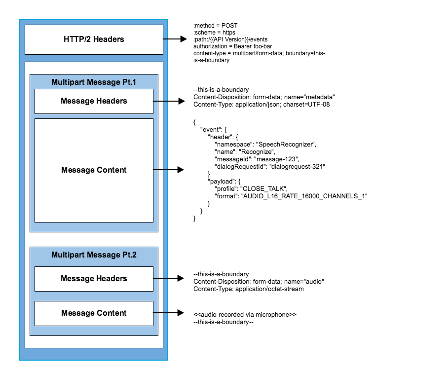

RestAPI

What happens when…
https://github.com/alex/what-happens-when
You enter a URL into a web browser
- The browser looks up the IP address for the domain name via DNS
- The browser sends a HTTP request to the server
- The server sends back a HTTP response
- The browser begins rendering the HTML
- The browser sends requests for additional objects embedded in HTML (images, css, JavaScript) and repeats steps 3-5.
- Once the page is loaded, the browser sends further async requests as needed.
Json
- JSON stands for JavaScript Object Notation
- JSON is often used when data is sent from a server to a web page
- JSON is “self-describing” and easy to understand
- Imagine python dictionaries
API – Application Programming Interface
- Rules that you must follow to communicate with other software systems (possibly over the internet)
- API developers can design APIs using several different architectures.
- APIs that follow the REST architectural style are called REST APIs.
- Web services that implement REST architecture are called RESTful web services.
REST – Representational State Transfer
A certain set of rules on how an API should work.
REST defines the following architectural constraints:
- Stateless: The server won’t maintain any state between requests from the client.
- Client-server: The client and server must be decoupled from each other, allowing each to develop independently.
- Cacheable: The data retrieved from the server should be cacheable either by the client or by the server.
- Uniform interface: The server will provide a uniform interface for accessing resources without defining their representation.
- Layered system: The client may access the resources on the server indirectly through other layers such as a proxy or load balancer.
- Code on demand (optional): The server may transfer code to the client that it can run, such as JavaScript for a single-page application.
Example: https://api.github.com/users/
Alternatives for REST:
Hypertext Transfer Protocol

You send HTTP Requests, you get back HTTP responses.
| Method | Purpose |
|---|---|
| GET | Retrieve existing data |
| POST | Add new data |
| PUT | Update existing data |
| PATCH | Partially update existing data |
| DELETE | Delete data |
HTTP Errors
| Status | Message |
|---|---|
| 404 | The URL you asked is not found |
| 503 | Unavailable right now |
| 403 | The server understands the request but refuses to authorize it |
| 200 | Everything went perfect |
| 400 | Something is wrong on the request params |
| anything else | anything |
Read more: https://www.restapitutorial.com/httpstatuscodes.html